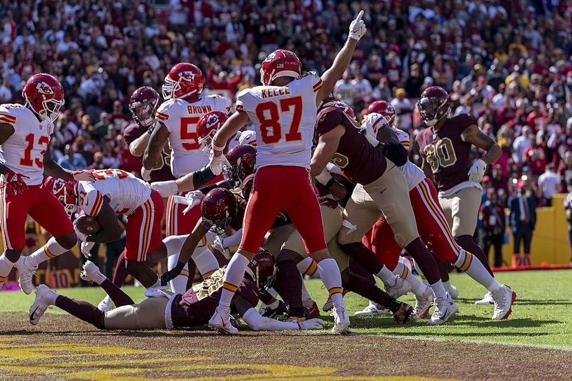

The Week's High Score
Left 46 On The Bench
ProfessorMerlyn scored 173.22, the best in week 9, and beat KnightRider_85 by 41. His best possible lineup was 219.30, which would have been the highest score of the season. Most of the difference was a kicker and a defence.

Travis Kelce: All-Pro Reels / CC BY-SA 2.0

Rancor Fajitas 173.22, Willis’s Willies 132.06
The best score of the week
ProfessorMerlyn scored 173.22 in week 9, the highest score in the league, and beat KnightRider_85 by 41.16, the widest margin of the week. He is now 5-2 against him all time. Christian Watson scored 28.60, Bucky Irving 28.50 and Bryce Young 21.84, and Merlyn went 2-0 for the second week running, which takes him from 6-10 to 8-10 and level on record with the team in the last playoff place.
He got the hard decisions right. He started Young at superflex over Justin Herbert, who scored 11.42 on the bench. He started Jonah Coleman, who had scored 20.90 on his bench the week before, and Coleman scored 18.30.
219.30
The lineup on the bench
His bench scored 103.92, and the best lineup available to him from his own roster was 219.30. ceefry's 217.99 in week 3 is the highest score anyone has posted in 2026, so the best version of Merlyn's week 9 would have been the season high by 1.31 points. He left 46.08 points out, the most in the league this week.
The honest reading is that 28 of the 46 points came from the kicker and the defence. He carries two of each, and the Rams scored 24.00 on the bench while the Ravens scored 3.00 in the lineup. Sleeper had projected the Rams higher, 9.36 to 7.78, and he went the other way, though a defence projection is a weak guide from one week to the next. He did start the kicker Sleeper preferred, Aubrey at 7.58 to Fairbairn's 7.08, and Fairbairn outscored him by 7.00. None of it changed a result. He won both anyway.
Loveland or Kelce
Five weeks out of seven
The tight end is the part that keeps happening. In seven of nine weeks Merlyn has started one of Colston Loveland and Travis Kelce and benched the other, and in five of those seven the benched one scored more. This week Kelce scored 16.80 on the bench and Loveland 7.90 in the lineup, and Sleeper had projected Kelce higher, 13.80 to 11.25. Last week it was Kelce 10.20 on the bench and Loveland 10.00, a gap of 0.20. In weeks 4 and 6 it went the other way, with Loveland outscoring a started Kelce.
The five wrong weeks cost 33.60 points between them. Only week 1 cost him a result, when Kelce in place of Loveland would have turned an 0-2 week into 2-0. He has picked the wrong one starting in each direction, so this is not a case of trusting the wrong player. The two have been close enough all season that the choice has mostly been a coin toss, and Merlyn has lost five of seven.
What it means now
Three teams at 8-10
derrek777, OneManEra and ProfessorMerlyn are all 8-10, and derrek777 holds sixth on points. Merlyn has won four of his last six results, and his healthy per-game strength is third in the league, behind only TheSoop and ceefry. He plays CaptainClark in week 10 and leads that series 5-4. Herbert and Patrick Mahomes are both listed questionable, and Sleeper's best lineup for him has Young and Mahomes in the two quarterback slots and Kelce at tight end.